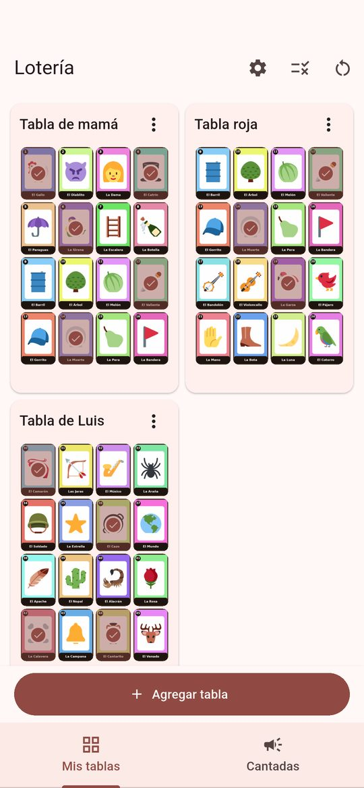
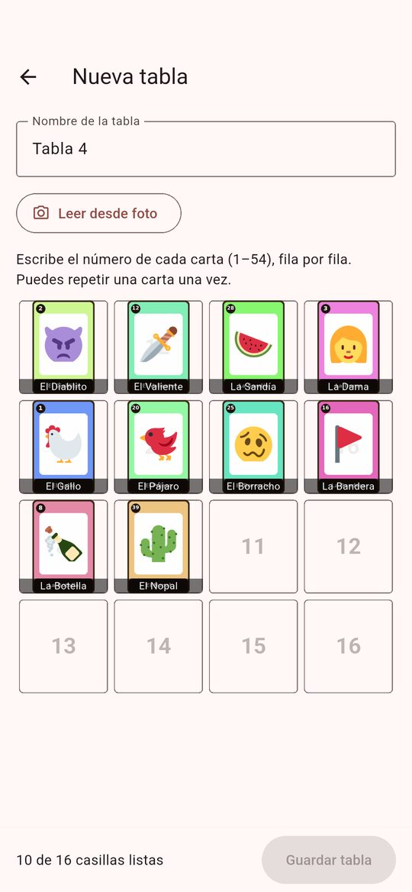
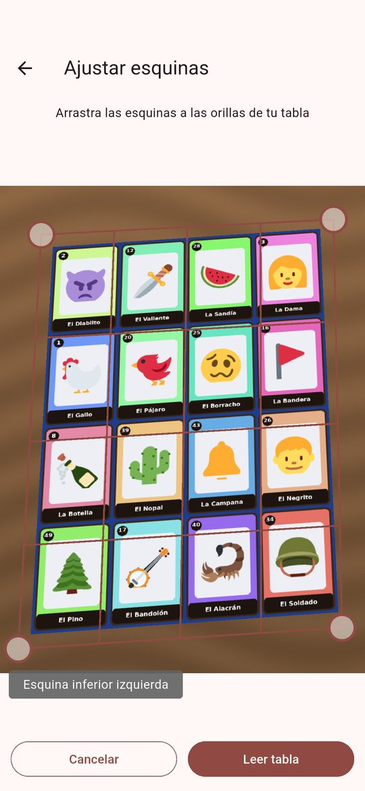
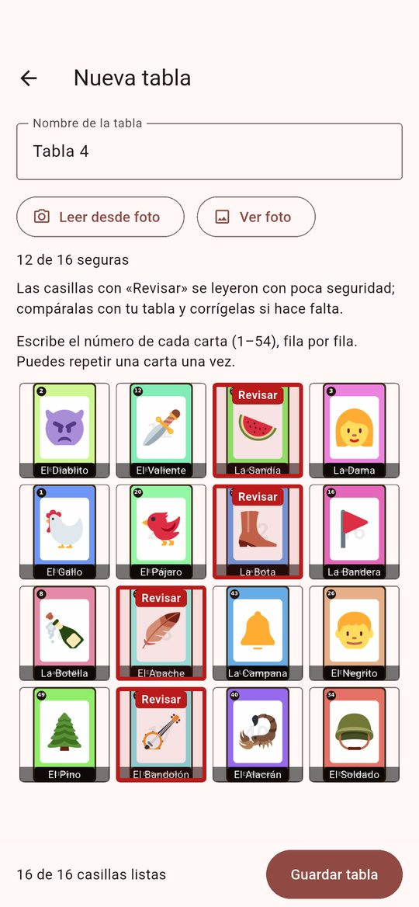
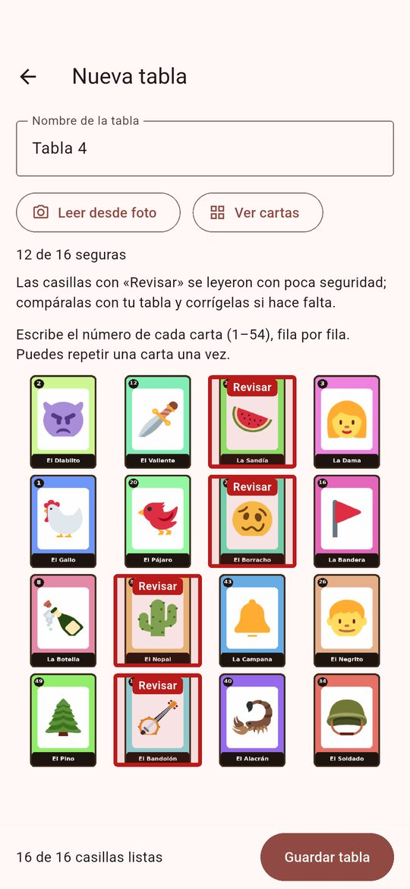
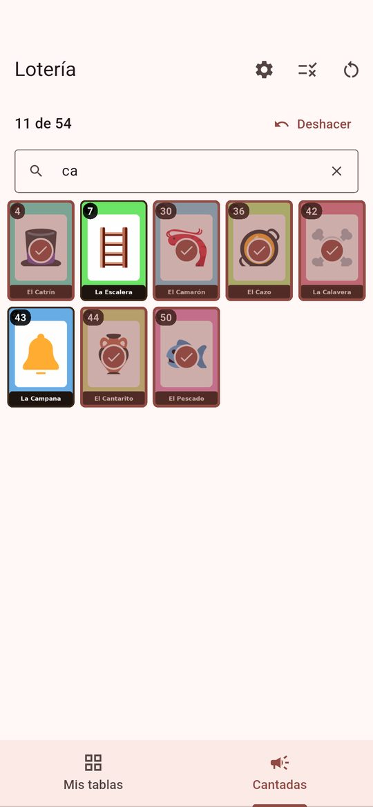
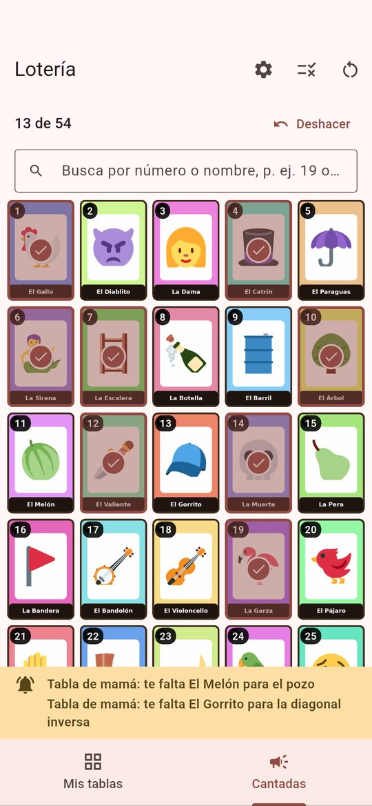
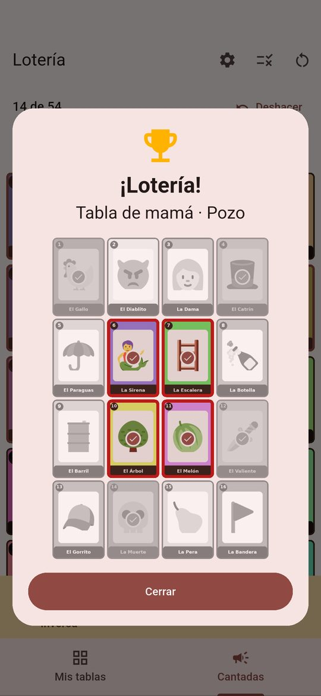
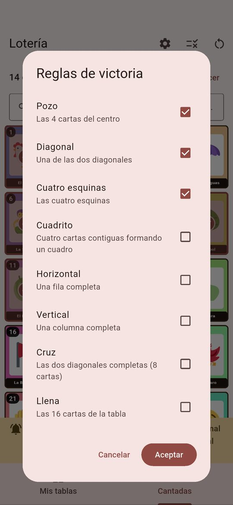

Cómo usar Lotería Mexicana: Asistente
Guía breve de la app: registra tus tablas, marca las cartas que se cantan y recibe avisos cuando estás cerca de ganar o cuando ganas.
Agregar una tabla


Con el teclado
- Ve a Mis tablas y toca Agregar tabla.
- Escribe un nombre para la tabla.
- Escribe el número de cada carta (del 1 al 54), fila por fila.
- Cuando las 16 casillas estén listas, toca Guardar tabla.
Con una foto
- Toca Leer desde foto y elige Cámara o Galería.
- Ajusta las 4 esquinas arrastrándolas a las orillas de la tabla.
- Toca Leer tabla.
- Revisa las casillas con contorno rojo grueso, fondo tintado y la etiqueta «Revisar»: se leyeron con poca seguridad. Toca la etiqueta para ver cómo se leyó y corrige el número si no es el correcto.
- Toca Ver foto para ver tu foto en las casillas (y Ver cartas para volver). Mantén pulsada una casilla para comparar el recorte de tu foto con la carta elegida.
- Toca Guardar tabla.



Al guardar una tabla leída desde foto, sus casillas pueden mostrar tu foto en vez de las cartas. Cámbialo cuando quieras en el menú de la tabla, en Mis tablas, con «Usar las imágenes de mi foto».
Consejos para la foto
- Toma la foto de frente, sin inclinar el teléfono.
- Usa buena luz y evita sombras sobre la tabla.
- Evita los reflejos: si la tabla brilla, cambia el ángulo o aleja la lámpara.
- Procura que se vea la tabla completa, con sus 16 cartas y sus cuatro orillas.
Durante el juego
- Cantadas: toca una carta para marcarla como cantada. Vuelve a tocarla para desmarcarla.
- Buscar: escribe un número (19) o parte del nombre (ca) en el cuadro de búsqueda para encontrar la carta más rápido.
- Deshacer: el botón Deshacer quita el último cambio en las cartas cantadas.
- Nueva partida: el ícono de reinicio, arriba, borra las cartas cantadas. Tus tablas y reglas se conservan.

Avisos
- A una carta de ganar: una franja justo encima de las pestañas muestra la tabla y la carta que te falta. El teléfono vibra corto. Cada aviso aparece una sola vez por combinación.
- ¡Lotería!: al completar un patrón aparece la tabla ganadora, con el patrón resaltado, y el nombre de la combinación. El teléfono vibra largo. Toca Siguiente si hay más victorias, o Cerrar.
- Más cerca de ganar: en Mis tablas se listan las combinaciones que están más cerca de completarse.


Reglas y patrones
Toca el ícono Reglas, arriba, y marca los patrones de la partida. Puedes activar uno, varios o todos, pero debe quedar al menos uno. Aceptar guarda los cambios; Cancelar los descarta.
- Pozo
- Las 4 cartas del centro. Viene activado.
- Diagonal
- Una de las dos diagonales. Viene activado.
- Cuatro esquinas
- Las cuatro esquinas. Viene activado.
- Cuadrito
- Cuatro cartas contiguas que forman un cuadro.
- Horizontal
- Una fila completa.
- Vertical
- Una columna completa.
- Cruz
- Las dos diagonales completas (8 cartas).
- Llena
- Las 16 cartas de la tabla.

Carta repetida
En Ajustes, la opción «Permitir una carta repetida por tabla» viene activada: una sola carta puede aparecer dos veces en la misma tabla, pero ninguna más de dos veces. Desactívala si quieres que todas las cartas de cada tabla sean distintas.
Privacidad
- La app funciona sin internet.
- Tus tablas, tus marcas y tus ajustes se guardan sólo en tu teléfono. No hay cuentas y no se envían datos a ningún servidor.
- La lectura de fotos también se hace en el teléfono.
Lotería Mexicana: Asistente es un acompañante no oficial. No reparte cartas, no sortea nada y no sirve para apostar.